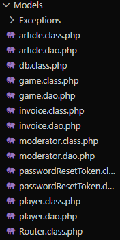
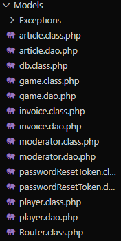
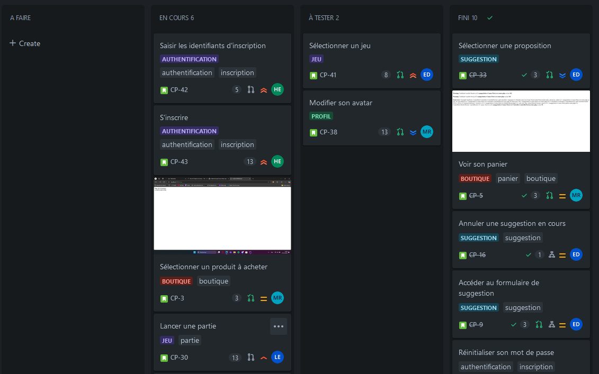
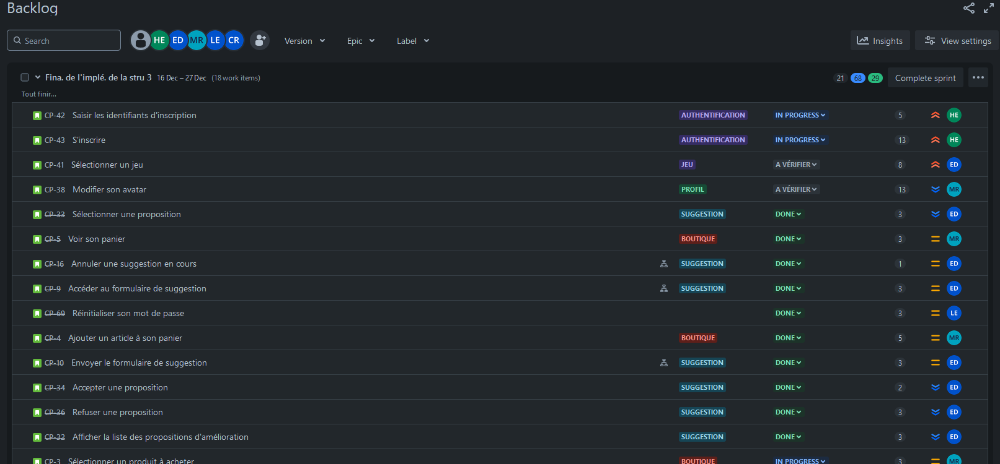
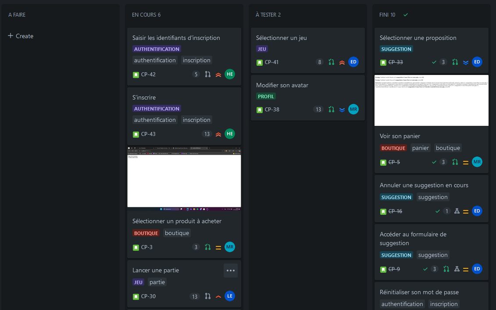
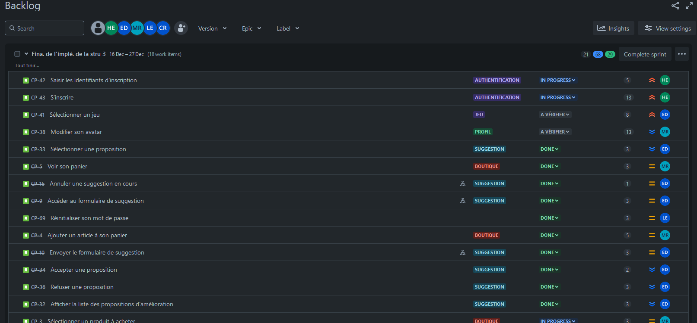

Comus Party est une application web qui offre plusieurs mini-jeux en ligne. Ce projet nous a permis de découvrir les méthodes agiles et SCRUM. Alors que le groupe entier faisait partie de l'équipe de développement, 2 membres étaient également product owner ou Scrum master. Nous avons fait des sprints, nous avons créé le backlog et les différentes user stories et organisé des daily-meeting et des rétrospectives.
HTML a été utilisé avec Twig afin de créer les pages de l'application. Nous avons utilisé l'héritage de templates de Twig pour certaines pages (comme un layout de base ou des layouts en commun pour les pages d'authentification).

TailWindCSS a été utilisé pour faire le style des pages de l'application. Nous avons créé un thème personnalisé en utilisant la documentation de TailWindCSS et nous avons pu utiliser un fichier tailwind.config.js dans lequel nous avons défini les couleurs, les polices et autres variables.
JS nous a permis d'interagir avec les pages de l'application côté client (vérifications lors de l'authentification par exemple), mais aussi de développer les mini-jeux de l'application.
PHP a été utilisé pour créer le back-end de l'application (paiements, vérifications, authentification, interactions avec la base de données, sessions, e-mails...). Nous avons utilisé la POO et le pattern MVC pour structurer le code.


 


Nous avons utilisé SQL afin de créer la base de données de l'application ainsi que pour la gérer. En pair avec PHP, nous avons utilisé PDO dans le but d'interagir avec la base de données.

Nous avons utilisé NPM afin d'installer et de gérer les dépendances de l'application avec un fichier package.json (principalement TailWindCSS).
Composer a été utilisé pour installer et gérer des dépendances de l'application avec un fichier composer.json. Nous avons utilisé : phpmailer, uuid, dotenv, phpunit et twig.
Apache nous a permis de servir l'application localement, ce qui nous a permis de travailler et de tester l'application dans un environnement local.
Git et GitHub nous ont permis de gérer le versionning de l'application. En pair avec les méthodes agiles et SCRUM, nous avons créé des branches pour chaque user story et les avons fusionnées quand elles avaient fini.

Nous avons utilisé les méthodes agiles et SCRUM en cohésion avec Jira pour gérer le développement de l'application et du projet. Jira nous a permis de suivre l'évolution du projet avec des outils intégrés (gestion des sprints, user stories, tableau kanban, backlog, graphes d'avancement…).

 




Doxygen a été utilisé pour générer la documentation de l'application.

Nous avons utilisé PHPUnit pour tester l'application et s'assurer que celle-ci fonctionnait correctement.